Introducing the Grid Builder
Table of Contents
Grid components are the heart of Alpha Anywhere Web Publishing. They retrieve and display data from a variety of types of databases. They allow the user to search for, edit, insert, and delete records. You create grid components with the Grid Builder.
|
Finding the Grid Builder
1. If you have set up Web Security already, Go to the
Web Projects Control Panel and click
to
open the Select Grid Component Dialog.
1. Alternatively, click New on the
Web Projects Control Panel toolbar.
2. In the New File Dialog select Web
Component and click Next >.
3. When asked what type file you want to create, click
Grid and Next >.
2. The Select Grid Component Dialog will load. Choose whether you
want to work from a template or start with blank Grid Component and
click OK. The Grid Builder will appear.
Toolbar Functions
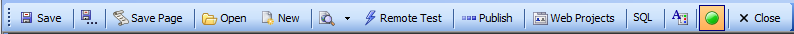
 |
Save |
Saves the currently open grid. |
 |
Save As |
Saves the currently open grid after asking for the path and filename. |
|
Save Page |
Creates a temporary file that contains the grid, optionally opening the page in the HTML Editor. |
 |
Open |
Allows you to select and open an existing grid from any of your projects. |
 |
New |
Allows you to create a new grid. |
 |
Browser |
Displays the grid component in a temporary page in your browser
of choice. |
|
|
Remote Test |
Test on a remote device (such as a phone or tablet) |
 |
Publish |
Publishes the grid to the destination associated with the selected profile. |
 |
Web Projects |
Displays the Web Projects Control Panel. |
|
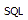 |
SQL |
Loads the SQL Tools menu. |
|
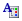 |
Web Style Builder |
Opens the Web Style Builder |
|
|
Server |
Turn the server on and off, when on the server icon
appears green. |
 |
Close |
Closes the Grid Builder. |
Page Menu
The page menu allows you to select different sets of menus. Different menus will appear or disappear, depending on the options that you select.
Most of these Dependencies are determined under the Component
Type page. If you click Grid is:
Updateable under component type, for example, the 'Update
Settings' Page will appear under the Grid tree. However,
setting your grid to this will prevent you from checking off the
'Grid contains a 'Detail View' part'
check box; that is also located on the Component Type page.
Without this box checked the Detail View
options, show below, will not appear under the Component Type
tree menu.
|
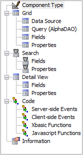
Component Type Page
The Component Type page defines the major
characteristics of a grid.
You can easily access this page by clicking the Component Type
icon at the top of the Component Type tree menu on the left.
Contained within the Component Type page is the
Grid Layout Menu. This menu lets
you choose how data will be displayed on your grid. The preview
window in the right hand side of the Component Type window will
give you a general idea of how these options will affect the
final grid display. Clicking the Tabular option
will display multiple records in a tabular layout. Clicking the Form (Columnar)
option will display data in a Form layout. Form layouts are
typically used to present one record at a time. However, you can
use Form layouts to display multiple records at once (i.e.
'repeating' forms). The 'repeating' forms can be displayed
either in a vertical list (i.e. a single 'column' of forms), or
in multiple columns (i.e. 'snaking' columns). Clicking the
Stacked Columnar option displays
data in a vertical list.
There are a number of dependencies within in
the Component Type Page. What you choose here will determine
what options you have going forward in designing you web
component.
1. Clicking Grid is:
Read only will cause the grid's fields to be
displayed in label controls that users will be able to read
but not change. Clicking this will also open the 'Grid
contains a Detail View part?' option on the Control
Type page. If
checked, this option will create a form that displays
information about one of the records in the grid. It will
also allow the Detail View
options to appear in the Component Type Tree, which will let
you design the detail view and how you would like the fields
within it to be presented.
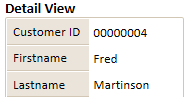
2. Clicking Grid is:
Updateable will enable features that display text box
controls and let users update information in the grid.
Clicking this option will make Grid > Update Settings appear
in the Component Type tree. This will let you let you make a
number of choices about how information on your grid is
updated and who is allowed to update information.

3. Checking the
Grid contains a 'Search' part?
check box will create a search box that will let users
search your grid for specific records. Clicking this will
also enable the Search > Fields
and Search > Properties options
in the Component Type menu. Among other things, these
options will let you design the search box to your liking
and choose what fields you want to allow it to access.
|
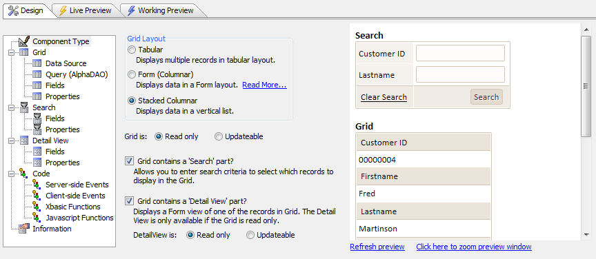
Grid Layout |
Defines the style of the grid and whether it will have search and/or detail parts. |
Grid is: Read only |
Causes the search fields to be displayed in label controls. |
Grid is: Updateable |
Causes the search fields to be displayed in text box controls. |
Grid contains a 'Search' part? |
Displays the Search > Fields and Search > Properties menus. |
Grid contains a 'Detail View' part? |
Displays the Detail view > Fields and Detail view > Properties menus. |
DetailView is: Read only |
Causes the detail view fields to be displayed in label controls. |
DetailView is: Updateable |
Causes the detail view fields to be displayed in text box controls. |
Preview Pane
The Preview Pane appears in the
Component Type page and shows a small sample of the grid's appearance using the currently selected style sheet.
Clicking the Click here to zoom preview
window text at the bottom of the preview pane puts the
preview inside of its own Component Layout dialog. If you change
the properties of your grid and click the
Refresh Preview button, these changes will be reflected
in the Preview Pane (as shown below). Alpha Anywhere also
contains Live Preview and Working Preview windows that let you
see your component on the server and debug it.
|

Grid Data Source Menu
The Grid > Data Source Menu provides two options that select the type of database connection that will be used:
.dbf Tables or an SQL database accessed via AlphaDAO (Alpha Data
Access Objects). Selecting one or the other will open either the
Grid > Query(DBF) menu or the
Grid > Query(AlphaDAO) menu.
|
Grid Query (DBF) Menu
This menu defines the grid's data source.
Depending on what you select from the 'Display
data from' option this source data will be derived from
either an Alpha Anywhere table or a view. Choosing
Table will specify that the grid
will come from a single table name and table alias fields. The
table to be used is entered in the 'Table
name' textbox. Simply click on the dropdown to the right
of the textbox and select one of the existing Alpha Anywhere
tables saved in your workspace. The 'Table alias', or the
name used by Alpha Anywhere to refer to the table internally, is
filled in automatically when you select a table name. The 'Calculated
fields' option lets you input new fields into your grid
based on existing data in your grid. This is only really
possible in the Grid Builder for work with read-only files. If
you click on 'Calculated fields', the Calculated Values Dialog
will open. To create new fields from existing ones simply type
in the name of the new field and specify which existing fields
will supply data to the new one. The Calculated Values dialog
has drop down lists of functions and existing fields to make
this task simple. It also contains a number of additional tools
as well as connections to the Expression builder dialog, Fields
dialog, and the Function Finder.

A new fullname field
being generated from first and last names.

The Calculate Values Dialog
has additional tools
The Define
Arguments button in the Table
query loads the Define Arguments dialog which lets you specify
arguments to be used in filter and order expressions. The Filter
option lets you filter
existing records for
records containing certain characteristics. To create a filter
click the
 to the right of the 'Filter' textbox. This will load the
Expression Builder. If you want
help creating
to the right of the 'Filter' textbox. This will load the
Expression Builder. If you want
help creating
a filter in the Expression
Builder just click on the Filter Genie button to load the Filter
Builder dialog. This will make it easy to choose which fields
you want to filter and how you want to filter them.
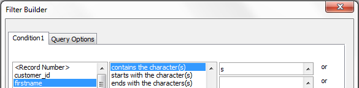
Creating a filter for all
first names containing 's'
The Order
option in the Table query lets you choose which field you will
use to order you records by. If you want, you can actually
order your grid using multiple fields, first sorting by one
field, then another, and another. To do this, click the
button to the right of the Order option. This will open an Order
Builder dialog that has dropdowns for all of your fields and an
A...Z or Z...A sort option. Below the Order option,
Sort Direction lets you decide
whether the records are sorted in an ascending or descending
direction. The Define Primary Key(s)
button at the bottom of the table query lets you define whether
to use record number or an expression for the tables primary
key. Using an expression here is recommended, as a record's
record number can change after a table is packed.
See also
Define an
Alpha Anywhere Table Query
|
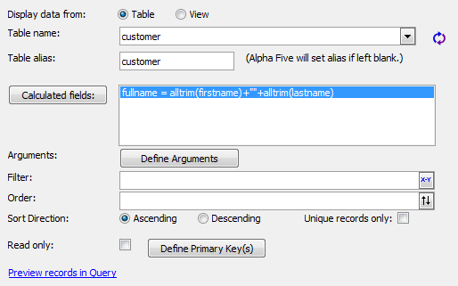
Alpha Anywhere Table Query
|
Display data from: Table |
Specifies that the grid will come from a single table.
Displays the Table name and Table alias fields. |
|
Display data from: View |
Specifies that the grid will contain fields from 2 or more tables. Displays the Tables in View and Fields in View buttons. |
Table name |
Displays a list of tables in the current database. |
 |
Refreshes the contents of the Table name list. |
Table alias |
This is the name that is used internally to refer to the table. |
Tables in View |
Displays the Define Join dialog, where you select the tables to use and their relationships to each other. |
Fields in View |
Displays the Select Fields in View dialog, where you select the fields to display and define calculated fields. |
If you choose Display
data from: View rather than table, you will specify that
the grid will come from a view that contains fields from 2 or
more tables. It will also change the options on the Grid Query
(DBF) Menu by displaying the Tables in
View and Fields in View
buttons. The other options that you saw in the 'Display data
from: Table' explanation above will remain the same. Clicking
the Tables in View: button will
load the Add Table dialog which
will ask you to select a table to use from a list. Unless you
specify otherwise the Add Table dialog will also add an alias to
the selected table. Click OK
and the Define Join dialog will
load. Add another table or simply click
OK again and the table will be added to 'Tables in
View'. If click the Tables in View button after adding a table
you will be taken directly to the Define
Join dialog. If you add a second table to Define Join you
will be asked to define the link properties between the new and
existing tables.
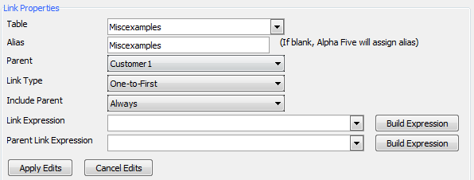
Clicking the
Fields in View button will load the
Select Fields in View Dialog. Here
you can create a list of fields and calculated field
definitions. The fields that you see in Fields in View will be
the fields contained in the tables you selected using Tables in
View. The Select Fields in View dialog allows you to select the
fields from a table that you want to work with in your View. To
add an individual field, simply highlight it using the list of
the left and then click the single arrow button
> to bring it into the view. To
move all the fields in your tables into the view select a field
in the list and click the double arrows >>
to bring them into the view. Similarly, select a field in the
view list on the right and click the single
< or double << arrows
pointing the opposite direction to remove one or all of the
fields from the view. Once a field is in the view, you can place
an = sign after the field to gain
access to the Expression Builder. The Expression Builder button
will appear at the bottom of the dialog as soon as you do this.
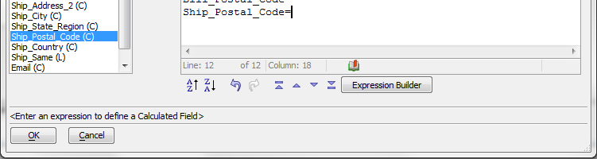
See also
Define an
Alpha Anywhere View Query.
Expression Builder.
|
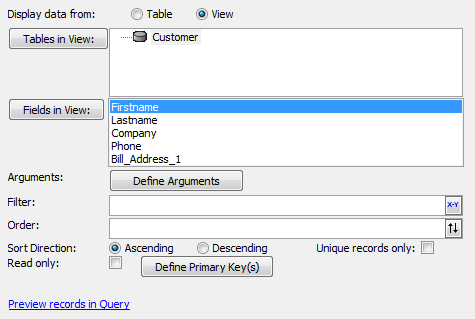
Alpha Anywhere View Query
Arguments |
Displays the Define Arguments dialog, where you specify arguments to be used in filter and order expressions. |
Filter |
Specifies the expression that selects the records that will be included in the grid. |
Order |
Specifies the expression that orders selected records. |
Sort Direction |
Specifies whether the order of records will be ascending or descending. |
Unique records only |
Specifies that the grid will display unique records only. |
Read only |
Specifies that the grid's fields will be displayed in label controls. |
Define Primary Key(s) |
Specifies the field(s) that uniquely identify each record. |
Grid > Query (AlphaDAO) Menu
The Grid >
Query(AlphaDAO) menu defines the grid's data source, which is a SQL SELECT statement directed to a SQL back-end database.
SQL or Structured Query Language is used to manage data within
many databases. To access and manipulate this data you will need
to first establish a connection string. Fortunately, Alpha
Anywhere makes this as easy as selecting the file to connect to.
When you first open the Grid > Query(AlphaDAO) menu it will ask
you for a Connection Type: at the
top of the screen. If you don't want to give your connection a
name select Specify Connection String
from the Connection Type dropdown and click the
Build button. This will load
the Create SQL Connection String Dialog.
At the top of the Create SQL Connection String Dialog you will
notice another Connection Type
dropdown. Here you can choose the database software that
contains the data which you want to access and where you will
ultimately store your data. Most of these Connection Types will
prompt you to select the File Name:
you wish to connect to under the Options menu. Click
OK and the connection string
should appear on the Grid > Query(AlphaDAO) page.
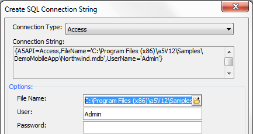
The Create SQL Connection String Dialog
If you are creating a lot of
connection strings and storing data in different databases you
might want to give your connection strings a name for ease of
use. On the Grid > Query(AlphaDAO)
page go to the Connection Type:
option and select Use Named Connection
String. Next click Add/Edit Saved
Connections to add a new named string. This will load the
AlphaDAO Connections dialog box.
Click New, this will load the
New AlphaDAO Connection dialog.
Enter the Connection Name: of your
new connection in the textbox at the top of the dialog. Then
place the connection string path in textbox entitled 'Connection
String:'. If you do not know the path you can click
Build, which will bring you back to the Create SQL Connection
String Dialog and help you create a new path.
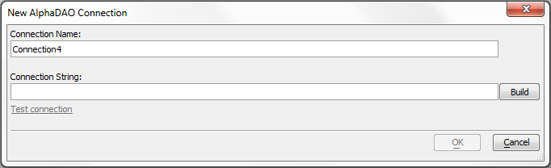
Creating a New Connection Name
Once a connection string name is
defined you can connect to it by going to the
Grid > Query(AlphaDAO) page and
clicking the Select... button next
to the Connection Name textbox.
This will open the AlphaDAO Connection
Strings dialog and will show you a list of all your named
connections. Select the connection you want to use and click
OK. Your connection will now appear on the Grid >
Query(AlphaDAO) page. Click Connect
to connect to it.
Also see
Define a SQL Query.
Create SQL Connection String Dialog.
|
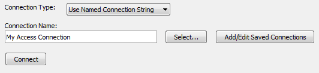
Connecting with a SQL Database Using a Named Connection String
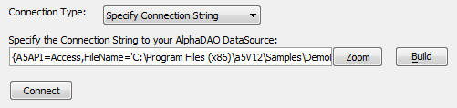
Connecting with a SQL Database By Building a Connection String
Connection type |
Specifies the type of connection to the database.
|
Build |
Displays the Create SQL Connection String dialog, where you can create a connection string. |
Zoom |
Displays the Edit Connection String dialog, where you can enter a connection string. |
Connection Name |
Specifies the saved connection that you will use to connect to the database. |
Add/Edit Saved Connections |
Displays the Connections dialog, where you can select, create, or edit a connection string. |
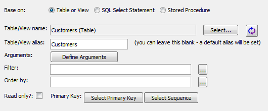
AlphaDAO Table Query
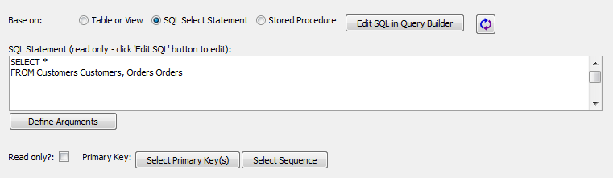
AlphaDAO SQL Query

Stored Procedure Query
Base on: Table or View |
Displays the Table/View name, Table/View alias, Filter, and Order by fields. |
Base on: SQL Select Statement |
Displays the Edit SQL button, SQL Select Statement window, and Select Primary Key(s) button. |
Table/View name |
Displays a list of tables in the current database. |
|
Refreshes the contents of the Table/View name list. |
Table/View alias |
This is the name that is used internally to refer to the table. |
Arguments |
Displays the Define Arguments dialog, where you specifys arguments to be used in filter and order expressions. |
Filter |
Specifies the expression that selects the records that will be included in the grid. |
Order by |
Specifies the expression that orders selected records. |
Read only |
Specifies that the grid's fields will be displayed in label controls. |
Edit SQL |
Displays the SQL Builder dialog, where you can define a SQL SELECT statement. |
Select |
Specifies the field(s) that uniquely identify each record. |
Grid Fields Menu
The Grid > Fields menu shows the fields that have been returned by your table or view selection or SQL query. You move these fields from the Available Fields list to the Selected Fields list to show them on the grid. See also Selecting the Fields to Display.
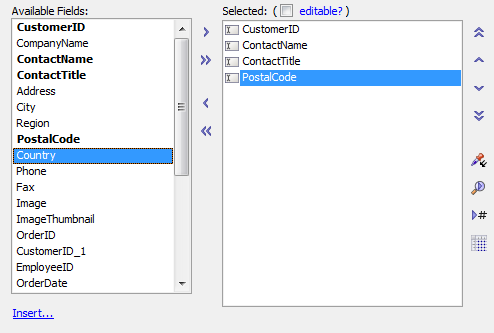
Available and Selected Fields Lists
Grid is Editable? |
Allows you to change a read-only grid to an editable grid. |
Available Fields |
Shows the fields that have been returned by your table or view selection or SQL query. |
Selected Fields |
Shows the fields that will appear on the grid, and the order in which the will appear. The top to bottom list order is the same as the left to right display order. |
|
Add selected fields to the Selected Fields list. |
 |
Adds all fields to the Selected Fields list. |
 |
Removes selected fields from the Selected Fields list. |
|
Removes all fields from the Selected Fields list. |
|
Move the selected field to the top of the Selected Fields list. |
|
Move the selected field up in the Selected Fields list. |
|
Move the selected field down in the Selected Fields list. |
 |
Move the selected field to the bottom of the Selected Fields list. |
As you select a field in the Selected Fields list, you will see its properties displayed in the Field Properties control. There are many properties for each field, which you can set. Here is where you define the presentation of your data. For more information, see Setting Grid Control Properties.
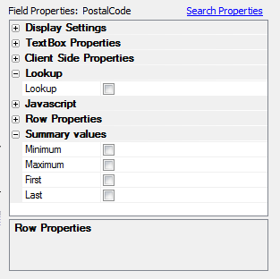
Typical Properties Dialog
Grid Properties Menu
The Grid > Properties Menu defines the formatting for the grid, including style sheet, and enables some special features. For more information, see Setting Grid Properties.
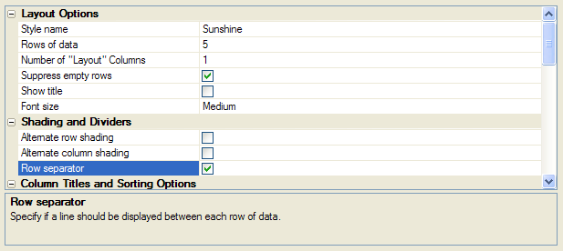
Grid > Properties Menu
Grid > Update Settings Menu
The Grid > Update Settings menu only appears if the grid is updateable. This is where you control user delete, update, and insert operations. For more information, see Setting Update Properties.
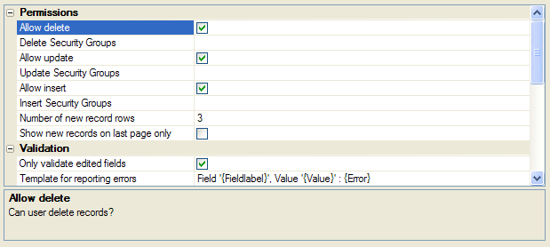
Grid > Update Settings Menu
Search Fields and Detail View > Fields Menus
The Search > Fields and Detail View > Fields menus are similar to the Grid > Fields menus in function. Once you have used the Grid > Fields menu, their operation will be clear. Refer to Adding a Search Form and Adding a Detail View Form.
Search > Properties and Detail View > Properties Menus
The Search > Properties and Detail View > Properties menus are similar to the Grid > Properties menus in function. Once you have used the Grid > Properties menu, their operation will be clear. Refer to Customizing the Search Part and Customizing the Detail View.
Events
The Events menu allows you to add Xbasic code that examines the contents of a grid, properties of a grid, and the data that is being submitted. You can then take action to modify values or even cancel the submission.
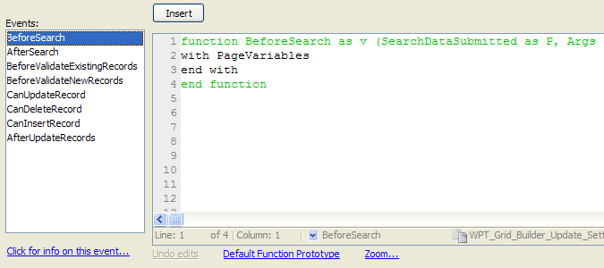
Information
The Information menu allows you to add information about the grid. It also tracks the time of the grid's creation and last update.
It is located at the very bottom of the Component Type tree menu
in the Grid Builder.
|
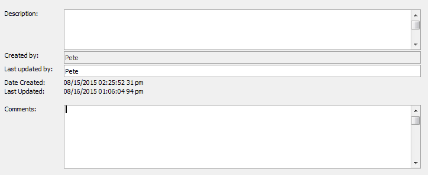
Xbasic Pane
The Xbasic pane shows you the Xbasic code that the builder is creating in the background. You cannot edit this code, but you can copy it.
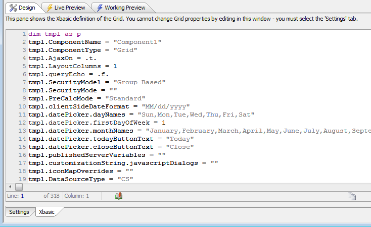
Live Preview Pane
The Live Preview pane renders the grid
using either Chrome or Internet Explorer. It provides a quick
look at your work and a way to check its behavior with live
data. The appearance of the grid may be different than you see
in another vendor's browser. When you Live Preview the Component
that you are editing, the Component is published to the special
LivePreview folder in your web root. In order for the Component
to execute, the CSS style sheet, Javascript files, any child
Components that your Component references, images used in your
Component, etc. must also be published to the LivePreview
folder. It can take some time to publish all of these files.
Once these files have been published you can
speed up the time taken to Live Preview your Component by
skipping the step that publishes all of the support files.
Generally, the first time you do a live preview, you should
choose the Full Preview option, and then subsequently, you
should choose the Fast Preview option. This will get you into
Live Preview quickly, as the only file that gets published is
the Component that you are editing. If your Component does not
appear to be styled correctly, just go back and choose the
option to publish all support files.
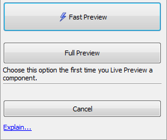
Live Preview Options
|
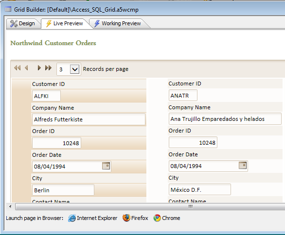
Working Preview Pane
See Also
Contents